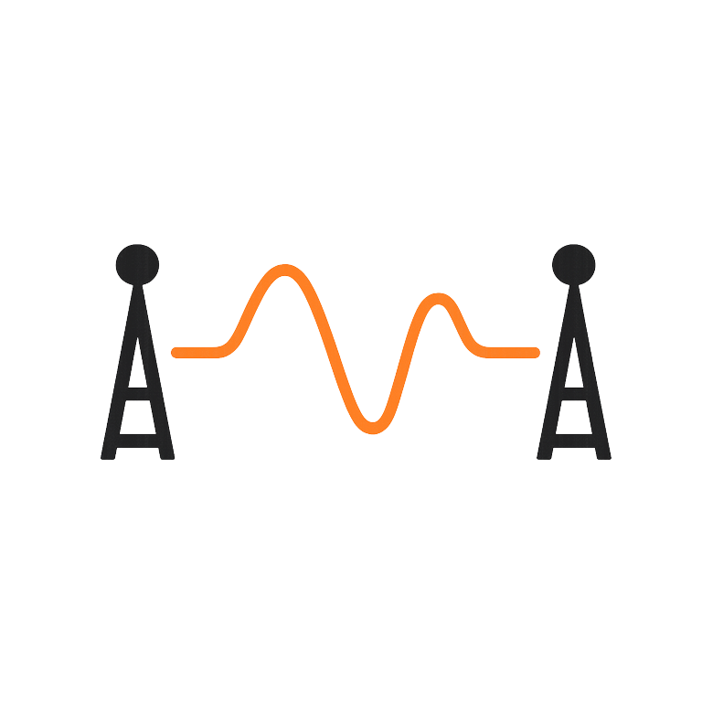
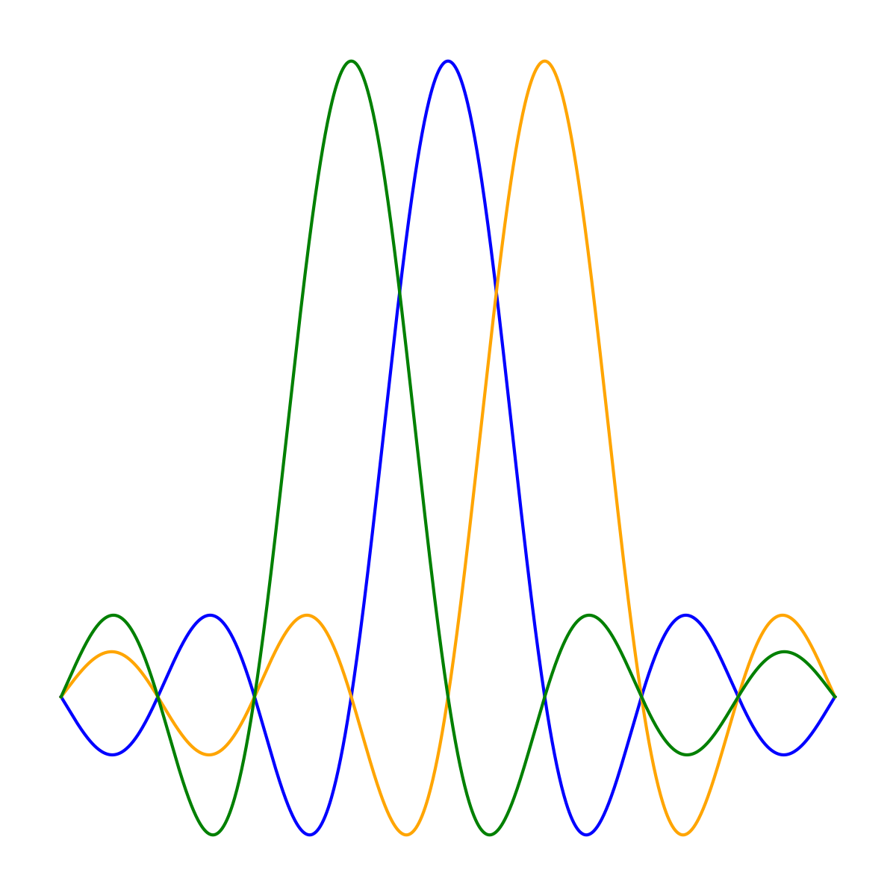

Welcome to Wireless Review
This site offers a concise, visual reference to core wireless communication concepts and formulas—ideal for interview preparation and quick refreshers. Use the sidebar to browse topics.
Wireless Communications Topics
Fundamentals of electromagnetic theory for wireless systems.

Overview of fast/slow fading, coherence time, and modeling.

Theoretical limits of data rate and spectral efficiency.
Step-by-step guide for system gain/loss calculations.

Review PSK, QAM, and bandwidth-efficient schemes.

Principles of spatial multiplexing and user separation.

Understand multicarrier modulation and its benefits.

Optimal power allocation under bandwidth constraints.

Pilot-based methods for estimating wireless channels.

Mitigating inter-symbol interference and distortion.

Effects of hardware nonidealities and design constraints.
Last updated: June 06, 2025